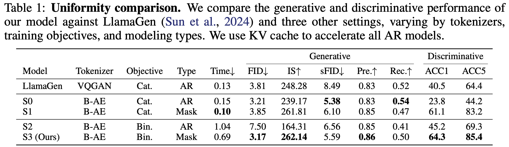

Results
Quantitative Comparison

Image Generation
Zero-shot Generalized Applications

BiGR supports diverse zero-shot applications, without requiring task-specific structural changes or parameter fine-tuning.
Try out BiGR yourself at here!